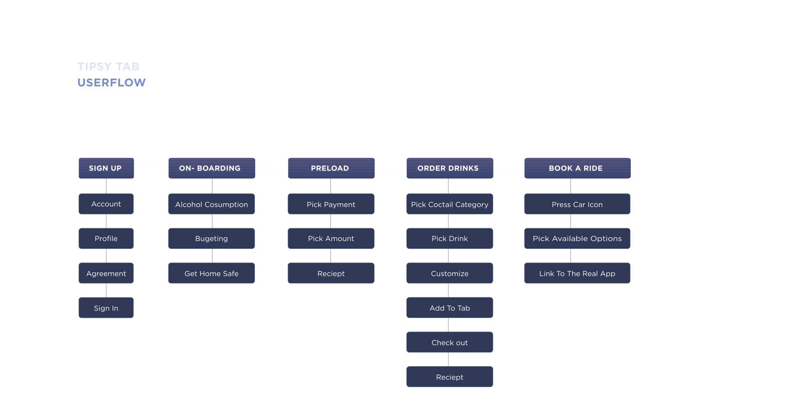
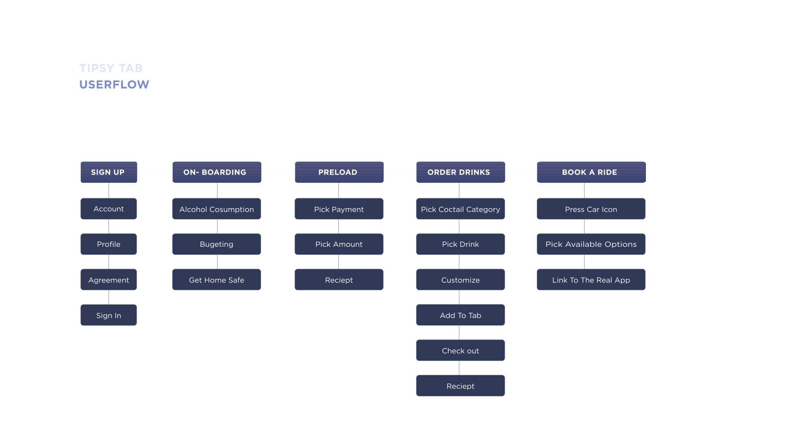

SAFE. RELIABLE. EFFICIENT
Role: UX/UI designer & Art Director
Timeline: 12 months
Tools: XD, AI, AE
[ 2019 ]
WHY?
There are many young nightclub goers experiencing binge drinking and do not understand enough about the drinks that they are consuming. They often end up drinking too much alcohol until their unable to make rational decisions or they become unconscious.
GOAL
Tipsy Tab main goal is to help young people avoid binge drinking and be more aware of their alcohol consumption. By using Tipsy Tab, bar goers are able to order drinks from the convenience of their smart phone, while also being able to learn more about their alcohol tolerance, keep track of their budget, and interact with different features within the app.
HOW?
After undergoing multiple research stages using different methods where I conducted multiple interviews with various target groups (bar-goers and bartenders), I have understood all the pain and gain points from both perspectives. This was very helpful for the overall development of Tipsy Tab.
 

ONLINE ORDER AND BAC CALCULATOR
Main function of the app is keep track of the user’s drinking habits and their blood alcohol level. On the home screen, a user’s BAC level will show up on top of the menu with a meter showing what “stage” they are currently in (from safe to life threatening).
It will continually update the user to show them where they are currently at. Additionally, on the menu, it shows how much an individual drink will effect the user’s intoxication level base on their personal statistics.
By doing this, it allows the user to have more control and be aware of how their drink is affecting them.
BUDGETING
Tipsy Tab is designed not only to focus on ordering drinks, but also user’s self control. In this user case, I am focused on spending. I wanted to make sure that the user is always aware of what their balance is, how much have they have spent and what other options are available for them with their current situation.
GET HOME SAFE
At a certain point, if the user is overspending or over-drinking, the app will notify the user. After the alert pops up, there will be a “Get Home Safe” feature available that is always on the screen so they can book a ride home anytime they want.